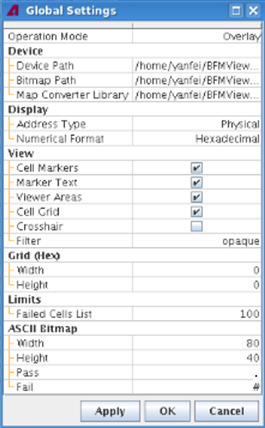
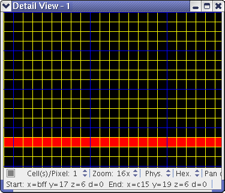

Global
Choosing in the BFM Viewer opens the Global Settings window, which contains a range of application-wide settings, as described below.

Changing these settings is described in Configuring the BFM Viewer.
Operation Mode
The operation mode is currently always set to Overlay.
Device
Displays the directories of the device, the bit maps and the map converter library that you have chosen when Starting the BFM Viewer.
To change these directories, select .
- Device Path: The directory of the device you are using.
- Bitmap Path: The directory of the bit maps you are going to analyze.
- Map Converter Library: The file path of a compiled map converter library (a .so file) that the BFM Viewer uses to display fail bit maps.
Display
These settings let you set default options for new displays. You can change these options for individual displays in the Chip Overview tab.
- Address Type: The way in which the addresses are displayed in the
Chip Overview tab:
- Logical
- Physical
- Topological
- Numerical Format: The numeral system used for displaying addresses:
- Decimal
- Hexadecimal
View
The settings in this section let you specify additional default display options. You can change these options for individual displays by right-clicking in a Chip Overview tab.
- Cell Markers: If this option is active, marked and failed cells are shown.
- Marker Text: If this option is active, the addresses of marked and failed cells are shown (provided that Cell Markers is also active).
- Viewer Areas: If this option is active, specified viewer areas and analysis areas are indicated by rectangles in the Chip Overview tab.
- Cell Grid: If this option is active, a grid is displayed that
indicates the cells of the device. Note that the grid is shown only at zoom level 8 and higher.
You can switch the grid on and off by pressing the G key in the Chip Overview tab or a detail view window.
- Crosshair: If this option is active, the cursor position on the cell grid is indicated by grid-spanning crosshairs.
- Filter: This setting specifies how applied filters are displayed:
- Hidden: The filter is not displayed. (The display looks as if no filter is being applied.)
- Transparent: The filter is displayed as a translucent overlay that lets the original cell colors shine through.
- Opaque: The filter is displayed as solid color; the original cell colors are completely hidden.
Grid (Hex)
The settings in this section let you specify an overlay grid that is displayed at higher zoom levels. This grid does not change the function of the BFM Viewer; however, it lets you more easily find particular cells. This grid is different from the cell grid, which is not affected by these settings.
- Width: The number of cells between each vertical grid line, as a hexadecimal number. If this value is 0, there is no overlay grid.
- Height: The number of cells between each horizontal grid line, as a hexadecimal number. If this value is 0, there is no overlay grid.

Limits
The Failed Cells List parameter lets you specify how many cells are displayed at most in the Failed Cells tab. The maximum number is 5,000,000.
ASCII Bitmap
Defines the size for an ASCII bit map constructed by selecting .
- Width: Lets you specify the number of bits in a row. The default number is 80.
- Height: Lets you specify the number of bits in a column. The default number is 40.
- Pass: Lets you specify a symbol to represent a pass bit on an ASCII bit map. "." is the default symbol.
- Fail: Lets you specify a symbol to represent a fail bit on an ASCII bit map. "#" is the default symbol.
Functional changes
- Introduced before SmarTest 6.3.2
- MTP 3.2.1: The maximum value for Failed Cells List in the Limits section is increased to 5,000,000.
- MTP 3.2.1: Adds a new setting "ASCII BitMap" in the global settings.
- MTP 3.2.1: Displays the bit maps path in the Device setting.